15 Descriptive Statistics
Descriptive statistics are used to summarize and describe the basic characteristics of a dataset. In this chapter, we explore classical descriptive statistics, including frequencies and percentages for categorical variables, and mean, median, mode, standard deviation, and interquartile range for continuous variables. These measures provide a concise overview of the central tendency, which indicates the center of a data distribution, and dispersion, which reveals the spread of values within the dataset. By analyzing these statistics along with data visualizations like bar plots, histograms, and box plots, we gain valuable insights into the underlying patterns and variability in the data.
15.1 Importing the Data
We will work with the “arrhythmia” dataset, stored in an Excel file. Assuming we are using RStudio Projects and the dataset is located in a subfolder named “data” within our RStudio Project directory, we can load the dataset using a relative path with the following R code:
arrhythmia <- read_excel(here("data", "arrhythmia.xlsx"))
head(arrhythmia)# A tibble: 6 × 6
age sex height weight QRS HR
<dbl> <chr> <dbl> <dbl> <dbl> <dbl>
1 75 male 190 80 91 63
2 56 female 165 64 81 53
3 54 male 172 95 138 75
4 55 male 175 94 115 71
5 NA male 190 80 88 75
6 40 female 160 52 77 70The “arrhythmia” dataset consists of 428 observations (rows), each representing an adult patient with heart arrhythmia, and includes 6 variables (columns) that describe the patients’ demographic and physiological characteristics of interest. Below is the meta-data for the variables:
- age: Age of the patient (yrs)
- sex: Sex of the patient (male, female)
- height: Height of the patient (cm)
- weight: Weight of the patient (kg)
- QRS: Duration of the QRS complex in the patient’s electrocardiogram (ms)
- heart_rate: Heart rate of the patient (beats/min)
To obtain basic summary measures for each variable, we can use the summary() function:
summary(arrhythmia) age sex height weight
Min. :20.00 Length:428 Min. :146 Min. : 18.0
1st Qu.:38.00 Class :character 1st Qu.:160 1st Qu.: 60.0
Median :48.00 Mode :character Median :165 Median : 70.0
Mean :48.85 Mean :165 Mean : 70.1
3rd Qu.:59.00 3rd Qu.:170 3rd Qu.: 80.0
Max. :83.00 Max. :190 Max. :176.0
NA's :3
QRS HR
Min. : 55.00 Min. : 44.00
1st Qu.: 80.00 1st Qu.: 65.00
Median : 87.00 Median : 72.00
Mean : 91.79 Mean : 73.55
3rd Qu.: 96.00 3rd Qu.: 80.00
Max. :178.00 Max. :152.00
Note that the age variable includes three missing values, which are denoted as NA's.
Next, let’s calculate the Body Mass Index (BMI) of the participants using their weight (in kilograms) and height (in meters) with the following formula:
\[ BMI = \frac{weight}{height^2} \tag{15.1}\]
The resulting BMI values are interpreted according to standard weight status categories for adults, which are shown in Figure 15.1.
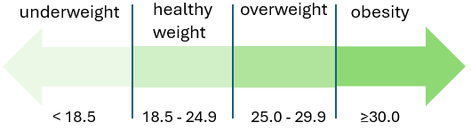
In R, we use the mutate() function to perform several tasks. First, we calculate the BMI (when typing the formula, be sure to divide the height by 100 to convert centimeters to meters) and round it to one decimal place. Next, we apply the case_when() function to categorize BMI based on the standard adult weight status categories, as shown in Figure 15.1. Finally, within the same mutate() call, we convert the sex and bmi variables into factors using the factor() function.
arrhythmia <- arrhythmia |>
mutate(bmi = round(weight / (height / 100)^ 2, digits=1),
bmi_cat = case_when(bmi < 18.5 ~ "underweight",
bmi < 25.0 ~ "healthy",
bmi < 30.0 ~ "overweight",
TRUE ~ "obesity"),
sex = factor(sex),
bmi_cat = factor(bmi_cat, levels = c("underweight", "healthy",
"overweight", "obesity")))
Let’s review the data with the glipmse() function:
glimpse(arrhythmia)Rows: 428
Columns: 8
$ age <dbl> 75, 56, 54, 55, NA, 40, 49, 44, 50, 62, 45, 54, 30, 44, 47, 47…
$ sex <fct> male, female, male, male, male, female, female, male, female, …
$ height <dbl> 190, 165, 172, 175, 190, 160, 162, 168, 167, 170, 165, 172, 17…
$ weight <dbl> 80, 64, 95, 94, 80, 52, 54, 56, 67, 72, 86, 58, 73, 88, 48, 59…
$ QRS <dbl> 91, 81, 138, 115, 88, 77, 78, 84, 89, 152, 77, 78, 133, 77, 75…
$ HR <dbl> 63, 53, 75, 71, 75, 70, 67, 64, 63, 70, 72, 73, 56, 72, 76, 67…
$ bmi <dbl> 22.2, 23.5, 32.1, 30.7, 22.2, 20.3, 20.6, 19.8, 24.0, 24.9, 31…
$ bmi_cat <fct> healthy, healthy, obesity, obesity, healthy, healthy, healthy,…Note that both variables, sex and bmi_cat, have been converted to factors.
15.2 Summarizing Categorical Data (Frequency Statistics)
The first step in analyzing a categorical variable is to count the occurrences of each label and calculate their frequencies. The resulting collection of these frequencies for all possible categories is known as the frequency distribution of the variable. We can also express the frequencies as proportions of the total number of observations, which are called relative frequencies or percentages (%).
A. Frequency Table with One Variable
To generate a frequency table for the sex variable, we can use the freq() function from the questionr package:
freq(arrhythmia$sex, cum = T, total = T, valid = F) n % %cum
female 237 55.4 55.4
male 191 44.6 100.0
Total 428 100.0 100.0
The table displays the following:
Absolute frequency (n): The number of patients in each category (female: 237, male: 191).
Percentage (%): The proportion of patients in each category relative to the total number of patients (relative frequency) multiplied by \(100\%\) (female: \(237/428 \times 100\% = 55.4\%\), male: \(191/428 \times 100\% = 44.6\%\)). Note that the percentages sum up to 100% (55.4% + 44.6% =100%).
Cumulative percentage (%cum): The sum of the percentage contributions of all categories up to and including the current one. For example, for the female category, the cumulative percentage is 55.4%. When combining female and male categories, the cumulative percentage is 55.4% + 44.6% = 100%. Therefore, the final cumulative percentage must equal 100%.
Similarly, we can create a frequency table for the bmi_cat variable:
freq(arrhythmia$bmi_cat, cum = T, total = T, valid = F) n % %cum
underweight 11 2.6 2.6
healthy 184 43.0 45.6
overweight 172 40.2 85.7
obesity 61 14.3 100.0
Total 428 100.0 100.0
We can also sort the BMI categories in decreasing order of frequencies:
freq(arrhythmia$bmi_cat, cum = T, total = T, valid = F, sort = "dec") n % %cum
healthy 184 43.0 43.0
overweight 172 40.2 83.2
obesity 61 14.3 97.4
underweight 11 2.6 100.0
Total 428 100.0 100.0In the resulting table, we observe that healthy weight category occurs most frequently, making it the mode of this dataset. However, it’s notable that overweight and obese individuals together represent more than half of the patients. Specifically, they constitute 54.5% of the total sample, with 40.2% classified as overweight and 14.3% as obese.
B. Frequency Table with Two Variables (Contingency Table)
In addition to tabulating each variable separately, we might also be interested in exploring the association between two categorical variables. In this case, the resulting frequency table is a cross-tabulation, where each combination of levels from both variables is displayed. This type of table is called a contingency table because it shows the frequency of each category in one variable, contingent upon the specific level of the other variable.
We can create a frequency contingency table with row and column totals, also known as marginal totals (represented by the ‘Sum’ values in the table), using the following code:
tab <- table(arrhythmia$sex, arrhythmia$bmi_cat)
addmargins(tab)
underweight healthy overweight obesity Sum
female 7 109 79 42 237
male 4 75 93 19 191
Sum 11 184 172 61 428
Now, suppose we are interested in the distribution of BMI categories within each sex group, meaning we want to examine how BMI varies among males and females. Starting from the frequency contingency table, we can create a table of row proportions.
To calculate these proportions, we divide each cell’s frequency by the total for its corresponding row. For example, to determine the proportion of individuals who are underweight among females, we divide the number of underweight females by the total number of females, \(P(BMI=underweight \ | \ gender=female)=7/237 \approx 0.03\) or \(3\%\) (Chapter 13).
This process computes the conditional probability of each BMI category given the sex. The resulting table, where each row sums to 1, is called a (row) conditional probability table. Such tables allow us to meaningfully compare the distribution of BMI across sex groups while accounting for differences in group sizes.
round(prop.table(tab, 1), 3)
underweight healthy overweight obesity
female 0.030 0.460 0.333 0.177
male 0.021 0.393 0.487 0.099
To obtain the above table in percentages, we can use the rprop() function from the questionr package:
rprop(tab, percent = T, total = F) #or 100*round(prop.table(tab, 1), 3)
underweight healthy overweight obesity
female 3.0% 46.0% 33.3% 17.7%
male 2.1% 39.3% 48.7% 9.9% The data reveal that a smaller proportion of female patients are overweight (33.3%, 79/237) compared to male patients (48.7%, 93/191), whereas a larger proportion of females are obese (17.7%, 42/237) than males (9.9%, 19/191).
15.3 Displaying Categorical Data
While frequency tables are very useful, plotting is often the most effective way to present data. For categorical variables, such as sex and bmi_cat, bar plots provide a clear and straightforward representation.
15.3.1 Simple Bar Plot
A simple bar plot is a common data visualization for comparing categories in a single variable. Figure 15.2 illustrates the frequency distribution of BMI categories. The horizontal axis (x-axis) displays the different BMI categories, ordered according to increasing BMI levels, while the vertical axis (y-axis) shows the frequency of each category.
# create a data frame with BMI categories and their counts
dat0 <- arrhythmia |> count(bmi_cat)
# plot the data
ggplot(dat0, aes(x = bmi_cat, y = n)) +
geom_col(width = 0.65, fill = "gray60") +
geom_text(aes(label=n), vjust = 1.6, color = "white", size = 6.0) +
labs(x = "BMI category", y = "Frequency") +
theme_minimal(base_size = 16)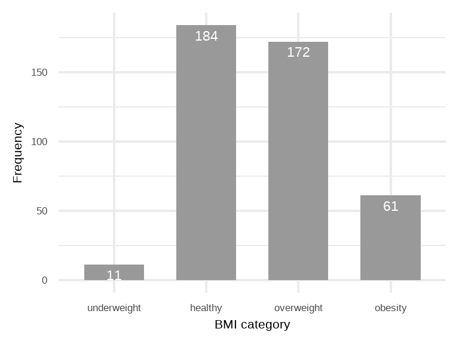
If the y-axis represents percentages (%), then each bar’s height corresponds to the percentage of patients in that category (Figure 15.3). For example, the percentage of patients classified as overweight is 40.2% (172/428).
dat1 <- dat0 |> mutate(pct = round_percent(n, 1))
ggplot(dat1, aes(x = bmi_cat, y = pct)) +
geom_col(width = 0.65, fill = "gray60") +
geom_text(aes(label=paste0(pct, "%")), vjust = 1.6,
color = "white", size = 6.0) +
labs(x = "BMI category", y = "Percent") +
scale_y_continuous(labels = scales::percent_format(scale = 1)) +
theme_minimal(base_size = 16)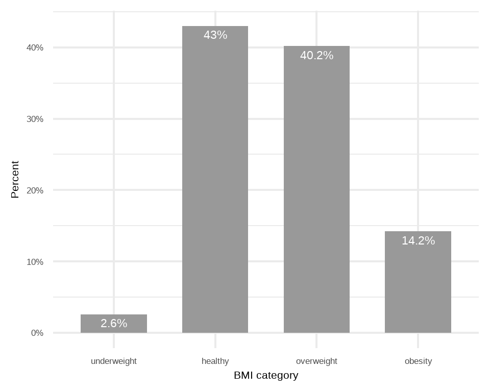
Simple bar plot
- All bars should have equal width and equal spacing between them.
- The height of each bar should correspond to the data it represents.
- The bars should be plotted against a common zero-valued baseline.
15.3.2 Side-by-Side Grouped Bar Plot
If the data are further classified based on the participant’s sex, it becomes impractical to present this information to a simple bar plot. In such cases, a side-by-side grouped bar plot (Figure 15.4) can facilitate easier visual comparisons.
# Create a data frame with counts of each BMI category by sex
dat2 <- arrhythmia |> group_by(sex) |> count(bmi_cat) |>
mutate(pct = round_percent(n, 1)) |> ungroup()
ggplot(dat2, aes(x = sex, y = pct, fill = bmi_cat)) +
geom_bar(stat = "identity", position = "dodge", width = 0.7) +
geom_text(aes(label = paste0(pct, "%")),
position = position_dodge(width = 0.7),
vjust = 1.2, hjust = 0.5, size = 6.0) +
scale_fill_manual(values = rev(pal_simpsons()(4))) +
scale_y_continuous(labels = scales::percent_format(scale = 1)) +
labs(x = "Sex", y = "Percent", fill = "BMI Category") +
theme_minimal(base_size = 16)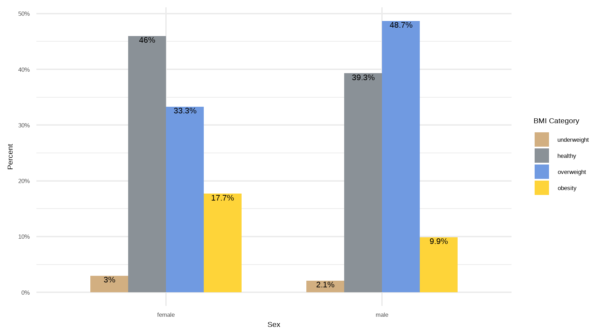
15.3.3 Stacked Bar Plot
Alternatively, we can create a stacked bar plot, where the bars are segmented by BMI categories. Figure 15.5 illustrates a 100% stacked bar plot, which displays the percentage of each BMI category among male and female patients, emphasizing the relative differences within each group.
ggplot(dat2, aes(x = sex, y = pct, fill = forcats::fct_rev(bmi_cat)))+
geom_bar(stat = "identity", width = 0.8)+
geom_text(aes(label = paste0(round(pct, 1), "%"), y = pct),
size = 6.0, position = position_stack(vjust = 0.5)) +
coord_flip()+
scale_fill_simpsons() +
scale_y_continuous(labels = scales::percent_format(scale = 1))+
labs(x = "Sex", y = "Percent", fill = "BMI category") +
theme_minimal(base_size = 16)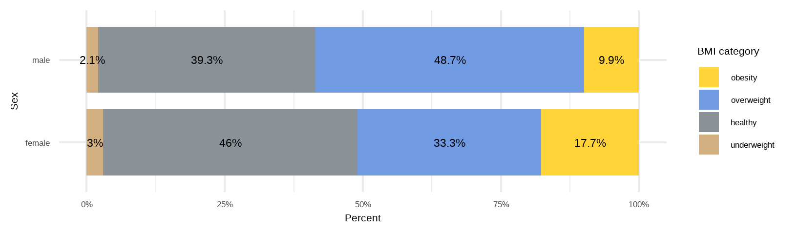
CAUTION!
One consideration when using stacked bar plots is the number of variable levels: with many categories, stacked bar plots can become confusing.
15.4 Summarizing Numerical Data (Summary Statistics)
Summary measures are single numerical values that describe or summarize a set of data from a sample (a sample is a subset of the population; see also ?sec-sampling). Numeric data can be described using two main types of summary measures (Table 15.1).
Measures of central location (also known as measures of central tendency) are summary statistics that describe the central point of a data distribution. Common examples include the sample mean, median, and mode.
Measures of dispersion (also known as measures of spread) are summary statistics that quantify the spread of values around the central point. Examples include the sample range, interquartile range (IQR), variance, and standard deviation.
Note that R functions for some of these summary measures (e.g., mean, median, standard deviation) have already been presented in the Chapter Chapter 7.
| Measures of central location | Measures of dispersion |
|---|---|
|
|
Additionally, measures of shape such as the sample coefficients of skewness and kurtosis offer further insights by revealing the overall shape and characteristics of the distribution.
15.4.1 Measures of Central Location
15.4.1.1 Arithmetic Mean of the Sample
Let \(x_1, x_2,...,x_{n-1}, x_n\) be a set of n observations in a sample. The arithmetic mean, \(\bar{x}\), is the sum of the observations divided by their number n:
\[ \bar{x}= \frac{x_1 + x_2 + ... + x_{n-1} + x_n}{n} = \frac{1}{n}\sum_{i=1}^{n}x_{i} \tag{15.2}\]
where \(x_{i}\) represents the data values and \({\sum_{i=1}^{n}x_{i}}\) their sum.
15.4.1.1.1 Example
Let’s calculate the sample mean of age and QRS variables in our dataset.
- 1st way: base R
# mean of age
mean(arrhythmia$age, na.rm = TRUE) [1] 48.84706# mean of QRS
mean(arrhythmia$QRS, na.rm = TRUE) [1] 91.79206
- 2nd way: dplyr
The summarize() function allows us to calculate the means of both variables simultaneously and present them in a tibble.
# A tibble: 1 × 2
mean_age mean_QRS
<dbl> <dbl>
1 48.8 91.8
Arithmetic sample mean
Advantages
- It uses all the data values in the calculation and is the balance point of the data.
- It is algebraically defined and thus mathematically manageable.
Disadvantages
- For a continuous, unimodal skewed distribution, the mean is usually pulled in the direction of the longer tail. Therefore, it is an inappropriate summary measure for highly skewed (asymmetrical) distributions.
- It is highly influenced by the presence of outliers—values that are abnormally high or low—making it a non-resistant summary measure.
- It cannot be easily determined by simply inspecting the data and is usually not equal to any of the individual values in the sample.
15.4.1.2 Median of the Sample
The sample median, denoted as md, is a robust measure of location that is less sensitive to outliers than the mean. To determine it, we first sort the observed values in ascending order: \(x_{(1)} \le x_{(2)} \le \cdots \le x_{(n)}\). If the number of observations n is odd, the median is the single middle value in the sorted list. If n is even, the median is the average of the two middle values. Formally, this can be expressed as:
\[ md={\begin{cases}x_{(\frac{n+1}{2})},&for\ n \ odd\\ \frac{1}{2}(x_{(\frac{n}{2})}+x_{(\frac{n}{2}+1)}),&for\ n \ even \end{cases}} \tag{15.3}\]
where \(x_{(1)}\), \(x_{(2)}\)…\(x_{(\nu)}\) are known as “order statistics”. For example, \(x_{(1)}\) is the “first order statistic”, meaning the smallest observed value, and \(x_{(\nu)}\) is the \(\nu\)-th order statistic, meaning the largest observed value.
15.4.1.2.1 Example
Ignoring any NA values, the n for the age variable is 425, which is an odd number. According to Eq. 15.3, the median of age is:
\[md = x_{(\frac{425+1}{2})} = x_{(\frac{426}{2})} = x_{(213)}\]
In R, we can use the sort() function to arrange the values of age in ascending order. Then, we select the value located at index position 213 using the [ ] operator, as follows:
sort(arrhythmia$age)[213][1] 48
The n for the QRS variable is 428 which is an even number. According to Eq. 15.3, the median of QRS is:
\[md = \frac{1}{2} (x_{(\frac{428}{2})} + x_{(\frac{428}{2} + 1)}) = \frac{1}{2}(x_{(214)} + x_{(215)})\]
We have already discussed that R provides a convenient function to compute the median in a dataset.
- 1st way: base R
# median of age
median(arrhythmia$age, na.rm = TRUE)[1] 48# median of QRS
median(arrhythmia$QRS, na.rm = TRUE) [1] 87
- 2nd way: dplyr
The same results can be obtained in a tibble by using the median() within the summarize() function.
# A tibble: 1 × 2
median_age median_QRS
<dbl> <dbl>
1 48 87
Sample Median
Advantages
- It is resistant to outliers compared to the mean.
- For ranking data, the median is often more meaningful than the mean.
Disadvantage
- It ignores the actual values of the data points, potentially losing some information about the data.
15.4.1.3 Mode of the Sample
Another measure of location is the sample mode, which represents the value that occurs most frequently in a set of data values. It’s important to note that some datasets may not have a mode if each value occurs only once, while others may have multiple modes.
Base R does not include a function for calculating the mode of a numeric variable. However, we can use the Mode() function from the DeskTools package, which calculates the mode(s) and provides the modal frequency as an attribute named “freq”.
15.4.1.3.1 Example
# mode for age
Mode(arrhythmia$age, na.rm = TRUE)[1] 47
attr(,"freq")
[1] 15The most common age value is 47 years, occurring 15 times in our dataset.
# mode for QRS
Mode(arrhythmia$QRS, na.rm = TRUE)[1] 78
attr(,"freq")
[1] 20The most common QRS duration is 78 ms, occurring 20 times in our dataset.
INFO
When a distribution has two modes (peaks) is called bimodal distribution. This can occur when two distinct populations are combined. For example, the distribution of height may appear bimodal if both men and women are participated in the study.
While the mode is less commonly used for continuous data, it is an important measure of central tendency for categorical data.
15.4.2 Measures of Dispersion
15.4.2.1 Range of the Sample
The range represents the difference between the maximum and minimum values in a set of sorted observations.
\[ Range = max - min = x_{(n)} - x_{(1)} \tag{15.4}\]
The minimum (min) value represents the lowest value observed in a dataset (\(x_{(1)}\)), while the maximum (max) value represents the highest value (\(x_{(n)}\)). These values provide valuable insights into the range and potential outliers within the dataset.
15.4.2.1.1 Example
- 1st way: base R
A straightforward approach is to calculate the minimum and maximum values using the min() and max() functions, respectively. Then, we use the Eq. 15.4 as follows:
[1] 20
[1] 83
[1] 63The minimum value of the age variable is 20, and the maximum value is 83. This means that the ages of the individuals in the dataset vary from 20 to 83 years, resulting in a range of 63 years.
[1] 55
[1] 178
[1] 123The QRS of the individuals vary from 55 to 178 ms, resulting in a range of 123 ms.
- 2nd way: dplyr
# A tibble: 1 × 3
min_age max_age range_age
<dbl> <dbl> <dbl>
1 20 83 63Here, the expression range_age = max_age - min_age calculates the range of the age variable using the previously calculated minimum and maximum of age within the summarize() function.
# A tibble: 1 × 3
min_QRS max_QRS range_QRS
<dbl> <dbl> <dbl>
1 55 178 123In a similar manner, the expression range_QRS = max_QRS - min_QRS calculates the range of the QRS variable.
IMPORTANT
The main disadvantages of the range as a measure of dispersion are its sensitivity to outliers and the fact that it uses only the extreme values, ignoring all other data points.
15.4.2.2 Inter-Quartile Range of the Sample
In the presence of outliers, the interquartile range (IQR) can provide a more accurate measure of the spread of the majority of the data. Before we define the interquartile range (IQR), let’s first clarify some basic concepts, specifically quantiles, quartiles, and percentiles.
A quantile is a value in a sorted dataset that divides the data into specific proportions. The most commonly used quantiles are the three quartiles, which divide the data into four equal-proportion parts (Figure 15.6):
\(Q_1\) is the first (lower) quartile, with 25% of observations below it and 75% above.
\(Q_2\) is the second (median) quartile, with 50% of observations below it and 50% above.
\(Q_3\) is the third (upper) quartile, with 75% of observations below it and 25% above.
Similarly, ninety-nine percentiles divide the sorted data into 100 equal-proportion parts. In this case, \(Q_1\), \(Q_2\), and \(Q_3\) correspond to the 25th, 50th, and 75th percentiles, respectively.
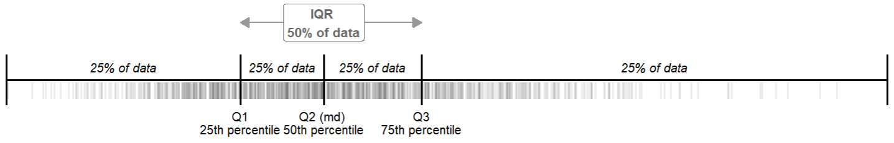
Interquartile range is the difference between the third quartile (\(Q_3\)) and the first quartile (\(Q_1\)) of the sorted observations.
\[ IQR = Q_3 - Q_1 \tag{15.5}\]
Consequently, the IQR represents the central 50% of the data, effectively excluding extreme values.
15.4.2.2.1 Example
- 1st way: base R
The quantile() function can help us to calculate the three quartiles. By specifying the prob parameter as c(0.25, 0.50, 0.75), we can calculate the quartiles \(Q_1\), \(Q_2\), and \(Q_3\), which correspond to the 25th, 50th (median), and 75th percentiles of the data, respectively.
25% 50% 75%
38 48 59 To calculate the IQR in R, we can either subtract the first quartile value from the third quartile value or use the IQR() function:
# IQR of age
IQR(arrhythmia$age, na.rm = TRUE)[1] 21
25% 50% 75%
80 87 96 # IQR of QRS
IQR(arrhythmia$QRS, na.rm = TRUE)[1] 16
- 2nd way: dplyr
# A tibble: 1 × 4
Q1_age median_age Q3_age IQR_age
<dbl> <dbl> <dbl> <dbl>
1 38 48 59 21# A tibble: 1 × 4
Q1_QRS median_QRS Q3_QRS IQR_QRS
<dbl> <dbl> <dbl> <dbl>
1 80 87 96 16
IMPORTANT
As with the range, greater variability in the data typically leads to a larger IQR. However, unlike the range, the IQR is resistant to outliers, as it is not influenced by observations below the first quartile or above the third quartile.
15.4.2.3 Sample Variance
Sample variance, denoted as \(s^2\), is a measure of spread of the data based on the deviations of the values from the mean, \(x_i- \bar x\). However, when we average these deviations, the sum always equals zero. This occurs because the mean acts as a balance point where the total positive and negative deviations cancel each other out. To resolve this issue, we calculate the variance using squared deviations, \((x_i- \bar x)^2\), which ensures that all values contribute positively to the measure of spread.
Mathematically, the sample variance is expressed as the sum of the squared deviations from the sample mean, divided by \(n-1\):
\[ variance = s^2 = \frac{\sum\limits_{i=1}^n (x -\bar{x})^2}{n-1} \tag{15.6}\]
15.4.2.3.1 Example
- 1st way: base R
# variance of age
var(arrhythmia$age, na.rm = TRUE)[1] 192.8799# variance of QRS
var(arrhythmia$QRS, na.rm = TRUE)[1] 366.2822
- 2nd way: dplyr
We use the var() function within summarize() to calculate the variance for each variable.
# A tibble: 1 × 2
var_age var_QRS
<dbl> <dbl>
1 193. 366.Variance is highly sensitive to outliers because it relies on squared deviations. Additionally, since it is expressed in square units, it is not the preferred metric for reporting data variability.
15.4.2.4 Standard Deviation of the Sample
Standard deviation (denoted as sd or s) is the square root of the sample variance:
\[ sd= s = \sqrt{s^2} = \sqrt\frac{\sum_{i=1}^{n}(x_{i}-\bar{x})^2}{n-1} \tag{15.7}\]
Standard deviation is a typical distance of observations from the mean and is expressed in the same units as the original values.
15.4.2.4.1 Example
- 1st way: base R
# standard deviation of age
sd(arrhythmia$age, na.rm = TRUE)[1] 13.88812# standard deviation of QRS
sd(arrhythmia$QRS, na.rm = TRUE)[1] 19.1385
- 2nd way: dplyr
# A tibble: 1 × 2
sd_age sd_QRS
<dbl> <dbl>
1 13.9 19.1
IMPORTANT
The standard deviation uses all observations in a dataset for its calculation and is expressed in the same units as the original data. However, it is sensitive to outliers, which can substantially influence its value.
15.4.3 Measures of Shape
15.4.3.1 Sample Coefficient of Skewness
Skewness is usually described as a measure of a distribution’s symmetry – or lack of symmetry.
Let \(X\) be a random variable with \(E(X) = \mu\) and \(Var(X) = \sigma^2\). The coefficient of skewness of a distribution (using the method of moments) is defined as:
\[ skweness= \eta_3 = \frac{E[(X-\mu)^3]}{\sigma^3} \tag{15.8}\]
The sample coefficient of skewness using the Fisher method is estimated as:
\[\hat{\eta}_3 = \frac{n}{(n-1)(n-2)} \frac{\sum_{i=1}^{n} (x_i - \bar{x})^3}{s^3}\]
where \(s\) is the sample standard deviation (Eq. 15.7).
Skewness values that are negative indicate a tail to the left (Figure 15.7 a), zero value indicate a symmetric distribution (Figure 15.7 b), while values that are positive indicate a tail to the right (Figure 15.7 c). In continuous, unimodal skewed distributions, the mean typically lies toward the direction of skewness (the longer tail), while the median, being resistant, usually remains closer to the center.1
1 This rule may not hold for discrete or multimodal distributions, or for distributions in which one tail is longer but the other is heavy (Hippel 2005).
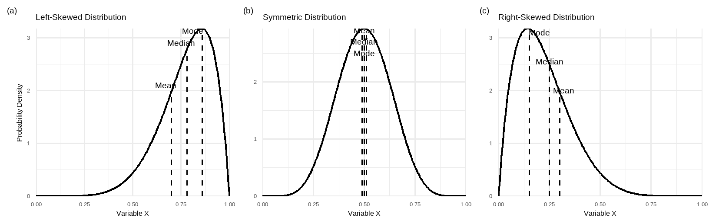
The skewness of a normal distribution is zero, reflecting perfect symmetry. Bell-shaped curves generally have skewness values between -1 and +1. Values beyond ±1 indicate moderate skewness, while values beyond ±2 indicate severe skewness. Skewness below -3 or above +3 suggests that the distribution is not symmetric, indicating that the variable is unlikely to follow a normal distribution.
15.4.3.1.1 Example
Many R packages are available for calculating the coefficient of skewness. In this textbook, we use the function skewness() from the EnvStats package, which by default applies the Fisher method.
- 1st way: base R and EnvStats
# skewness of age
EnvStats::skewness(arrhythmia$age, na.rm = TRUE)[1] 0.1046049# skewness of QRS
EnvStats::skewness(arrhythmia$QRS, na.rm = TRUE)[1] 1.876898
- 2nd way: dplyr and EnvStats
# A tibble: 1 × 2
skewness_age skewness_QRS
<dbl> <dbl>
1 0.105 1.88
15.4.3.2 Sample Coefficient of Excess Kurtosis
Kurtosis measures the weight of the tails in relation to the rest of the distribution, often referred to as “tailedness.” It is indirectly related to the peak of the distribution, indicating whether the peak is sharper or flatter compared to a normal distribution. The coefficient of kurtosis of a distribution (using the method of moments) is defined as:
\[ kurtosis = \eta_4=\frac{E[(X-\mu)^4]}{\sigma^4} \tag{15.9}\]
The kurtosis for a normal distribution is 3, and “excess” kurtosis is commonly preferred because it sets the value to zero. The excess kurtosis is defined as kurtosis minus 3:
\[ ex.kurt = \eta_4 -3 = \frac{E[(X-\mu)^4]}{\sigma^4} - 3 \tag{15.10}\]
The sample coefficient of excess kurtosis using the Fisher-Pearson bias-corrected formula is:
\[ \hat{ex.kurt} = \frac{n(n+1)}{(n-1)(n-2)(n-3)} \sum_{i=1}^{n}\left(\frac{x_i - \bar{x}}{s}\right)^4 - \frac{3(n-1)^2}{(n-2)(n-3)} \tag{15.11}\]
where \(s\) is the sample standard deviation (Eq.@ref(eq:vsdquation)).
Distributions with negative excess kurtosis are called platykurtic (Figure 15.8 a). If the excess kurtosis is zero the distribution is mesokurtic (Figure 15.8 b). Lastly, distributions with positive excess kurtosis are called leptokurtic (Figure 15.8 c).
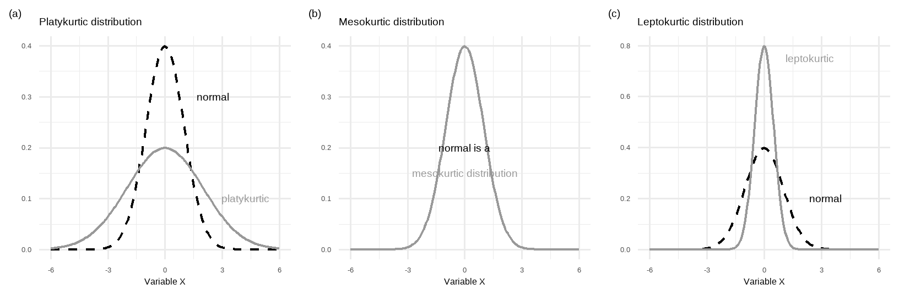
The excess kurtosis of a normal distribution is zero. Bell-shaped curves typically have excess kurtosis values between -1 and +1. Values between -1 and -3 or +1 and +3 suggest a departure from mesokurtic distribution. Values below -3 or above +3 strongly indicate that the distribution is not mesokurtic, suggesting that the variable is unlikely to follow a normal distribution.
15.4.3.3 Example
In this case, we will use the function kurtosis() from the EnvStats package, which applies the Fisher method to calculate excess kurtosis by default and provides detailed documentation.
- 1st way: base R and EnvStats
# excess kurtosis of age
EnvStats::kurtosis(arrhythmia$age, na.rm = TRUE)[1] -0.6495454# excess kurtosis of QRS
EnvStats::kurtosis(arrhythmia$QRS, na.rm = TRUE)[1] 3.939863
- 2nd way: dplyr and EnvStats
# A tibble: 1 × 2
kurtosis_age kurtosis_QRS
<dbl> <dbl>
1 -0.650 3.94
CAUTION!
There are various formulas for estimating sample skewness and kurtosis, so different R packages may produce slightly different results. Additionally, be cautious whether the function calculates kurtosis or excess kurtosis.
15.4.4 R packages Designed for Descriptive Statistics
Several R packages have been designed for descriptive statistics, each providing a variety of functions and methods to summarize and analyze data. We will generate descriptive statistics for the age and QRS variables simultaneously using functions from the dplyr package, followed by the dlookr and descriptr packages.
15.4.4.1 dplyr
- Age variable
# descriptive statistics of age
arrhythmia |>
dplyr::summarize(
n = n(),
na = sum(is.na(age)),
min = min(age, na.rm = TRUE),
q1 = quantile(age, 0.25, na.rm = TRUE),
median = quantile(age, 0.5, na.rm = TRUE),
q3 = quantile(age, 0.75, na.rm = TRUE),
max = max(age, na.rm = TRUE),
mean = mean(age, na.rm = TRUE),
sd = sd(age, na.rm = TRUE),
skewness = EnvStats::skewness(age, na.rm = TRUE),
kurtosis= EnvStats::kurtosis(age, na.rm = TRUE)
)# A tibble: 1 × 11
n na min q1 median q3 max mean sd skewness kurtosis
<int> <int> <dbl> <dbl> <dbl> <dbl> <dbl> <dbl> <dbl> <dbl> <dbl>
1 428 3 20 38 48 59 83 48.8 13.9 0.105 -0.650
- QRS variable
# descriptive statistics of QRS
arrhythmia |>
dplyr::summarize(
n = n(),
na = sum(is.na(QRS)),
min = min(QRS, na.rm = TRUE),
q1 = quantile(QRS, 0.25, na.rm = TRUE),
median = quantile(QRS, 0.5, na.rm = TRUE),
q3 = quantile(QRS, 0.75, na.rm = TRUE),
max = max(QRS, na.rm = TRUE),
mean = mean(QRS, na.rm = TRUE),
sd = sd(QRS, na.rm = TRUE),
skewness = EnvStats::skewness(QRS, na.rm = TRUE),
kurtosis= EnvStats::kurtosis(QRS, na.rm = TRUE)
)# A tibble: 1 × 11
n na min q1 median q3 max mean sd skewness kurtosis
<int> <int> <dbl> <dbl> <dbl> <dbl> <dbl> <dbl> <dbl> <dbl> <dbl>
1 428 0 55 80 87 96 178 91.8 19.1 1.88 3.94
Note that we can also use the across() function within the summarize() to apply statistical calculations to multiple columns (see also Chapter 10) using the following syntax:
arrhythmia |>
dplyr::summarize(across(
.cols = c(age, QRS),
.fns = list(
n = ~ n(), na = ~ sum(is.na(.x)),
min = \(x) min(x, na.rm = TRUE),
q1 = \(x) quantile(x, 0.25, na.rm = TRUE),
median = \(x) quantile(x, 0.5, na.rm = TRUE),
q3 = \(x) quantile(x, 0.75, na.rm = TRUE),
max = \(x) max(x, na.rm = TRUE),
mean = \(x) mean(x, na.rm = TRUE),
sd = \(x) sd(x, na.rm = TRUE),
skewness = \(x) EnvStats::skewness(x, na.rm = TRUE),
kurtosis= \(x) EnvStats::kurtosis(x, na.rm = TRUE)),
.names = "{col}_{fn}"))
15.4.4.2 dlookr
# A tibble: 2 × 10
described_variables n na mean sd p25 p50 p75 skewness
<chr> <int> <int> <dbl> <dbl> <dbl> <dbl> <dbl> <dbl>
1 age 425 3 48.8 13.9 38 48 59 0.105
2 QRS 428 0 91.8 19.1 80 87 96 1.88
# ℹ 1 more variable: kurtosis <dbl>Here, \(n\) denotes the number of observations after the exclusion of of missing values (NA).
15.4.4.3 descriptr
# descriptive statistics of age and QRS
arrhythmia |>
ds_tidy_stats(age, QRS) |>
dplyr::select(-c(5, 9, 13)) |>
arrange(desc(vars))# A tibble: 2 × 13
vars min max mean median mode range stdev skew kurtosis q1 q3
<chr> <dbl> <dbl> <dbl> <dbl> <dbl> <dbl> <dbl> <dbl> <dbl> <dbl> <dbl>
1 age 20 83 48.8 48 47 63 13.9 0.105 -0.650 38 59
2 QRS 55 178 91.8 87 78 123 19.2 1.88 3.95 80 96
# ℹ 1 more variable: iqrange <dbl>
Based on the summary statistics, the mean (48.8), median (48), and mode (47) of age are closely aligned. The low skewness suggests symmetry, and the excess kurtosis, falling within the acceptable range of (-1, 1), indicates a mesokurtic distribution.
In contrast, the mean (91.8), median (87), and mode (78) of QRS differ. Additionally, both the skewness (1.88) and the excess kurtosis (3.95) fall outside the acceptable range of (-1, 1), indicating a right-skewed and leptokurtic distribution.
IMPORTANT
Reporting summary statistics for numerical data:
Mean (sd) for data with distribution. A distribution is symmetric if its left and right sides are mirror images.
Median (Q1, Q3) for data with (or asymmetrical) distribution.
In our example, the age should be reported as 48.8 (13.9) years, indicating a mean of 48.8 years with a standard deviation of 13.9 years. For QRS, report it as 87 (80, 89) ms, indicating a median of 87 ms with an interquartile range (IQR) from \(Q_1\)=80 ms to \(Q_3\)=89 ms.
15.4.5 Summary Statistics by Group
If we are interested in computing the mean and standard deviation of age and QRS for female and male participants separately, we will stratify the data by sex using the group_by() function.
15.4.5.1 dplyr
- Age stratified by sex
arrhythmia |>
group_by(sex) |>
dplyr::summarize(
n = n(),
na = sum(is.na(age)),
min = min(age, na.rm = TRUE),
q1 = quantile(age, 0.25, na.rm = TRUE),
median = quantile(age, 0.5, na.rm = TRUE),
q3 = quantile(age, 0.75, na.rm = TRUE),
max = max(age, na.rm = TRUE),
mean = mean(age, na.rm = TRUE),
sd = sd(age, na.rm = TRUE),
skewness = EnvStats::skewness(age, na.rm = TRUE),
kurtosis= EnvStats::kurtosis(age, na.rm = TRUE)
) |>
ungroup()# A tibble: 2 × 12
sex n na min q1 median q3 max mean sd skewness kurtosis
<fct> <int> <int> <dbl> <dbl> <dbl> <dbl> <dbl> <dbl> <dbl> <dbl> <dbl>
1 fema… 237 2 21 36.5 47 58.5 83 47.8 14.3 0.200 -0.751
2 male 191 1 20 41.2 49 59 80 50.1 13.3 0.00658 -0.423
- QRS stratified by sex
arrhythmia |>
dplyr::group_by(sex) |>
dplyr::summarize(
n = n(),
na = sum(is.na(QRS)),
min = min(QRS, na.rm = TRUE),
q1 = quantile(QRS, 0.25, na.rm = TRUE),
median = quantile(QRS, 0.5, na.rm = TRUE),
q3 = quantile(QRS, 0.75, na.rm = TRUE),
max = max(QRS, na.rm = TRUE),
mean = mean(QRS, na.rm = TRUE),
sd = sd(QRS, na.rm = TRUE),
skewness = EnvStats::skewness(QRS, na.rm = TRUE),
kurtosis= EnvStats::kurtosis(QRS, na.rm = TRUE)
) |>
ungroup()# A tibble: 2 × 12
sex n na min q1 median q3 max mean sd skewness kurtosis
<fct> <int> <int> <dbl> <dbl> <dbl> <dbl> <dbl> <dbl> <dbl> <dbl> <dbl>
1 fema… 237 0 55 77 82 90 163 86.4 17.2 2.22 5.65
2 male 191 0 71 87 92 102. 178 98.5 19.4 1.92 3.65
15.4.5.2 dlookr
# A tibble: 4 × 11
described_variables sex n na mean sd p25 p50 p75 skewness
<chr> <fct> <int> <int> <dbl> <dbl> <dbl> <dbl> <dbl> <dbl>
1 QRS female 237 0 86.4 17.2 77 82 90 2.22
2 QRS male 191 0 98.5 19.4 87 92 102. 1.92
3 age female 235 2 47.8 14.3 36.5 47 58.5 0.200
4 age male 190 1 50.1 13.3 41.2 49 59 0.00658
# ℹ 1 more variable: kurtosis <dbl>15.4.5.3 descriptr
We can obtain similar summary measures using the ds_group_summary() function from the descriptr package with the following code:
# age stratified by sex
arrhythmia |>
drop_na(age) |>
ds_group_summary(sex, age)# QRS stratified by sex
arrhythmia |>
ds_group_summary(sex, QRS)Note that dropping any missing values (NA) from the age variable before using the ds_group_summary() is crucial for its proper functioning.
15.5 Displaying Numerical Data
15.5.1 Frequency Histogram
The most common way to present the frequency distribution of numerical data, especially when there are many observations, is through a histogram. Histograms visualize the data distribution as a series of bars without gaps between them (unless a particular bin has zero frequency). Each bar typically represents a range of numeric values known as a bin (or class), with the height of the bar indicating the frequency of observations (counts) within that particular bin (Figure 15.9). The geom_histogram() function in ggplot2 allows us to plot frequency histograms for age and QRS, with the option to specify the number of bins for dividing the data, as shown below:
# histogram of age
ggplot(arrhythmia, aes(x = age)) +
geom_histogram(bins = 10, fill="gray70", color="black", alpha=0.6) +
scale_x_continuous(breaks = seq(20, 80, by = 10)) +
theme_minimal(base_size = 14) +
labs(title = "Histogram: age", y = "Frequency")
# histogram of QRS
ggplot(arrhythmia, aes(x = QRS)) +
geom_histogram(bins = 29, fill="gray70", color="black", alpha=0.6) +
scale_x_continuous(breaks = seq(40, 200, by = 20)) +
theme_minimal(base_size = 14) +
labs(title = "Histogram: QRS", y = "Frequency")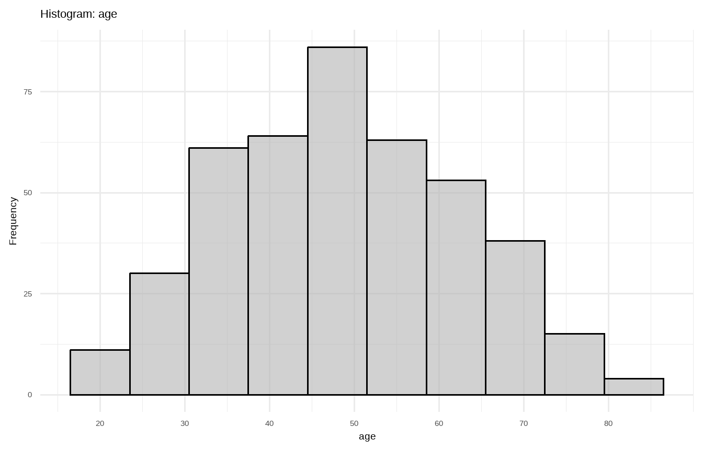
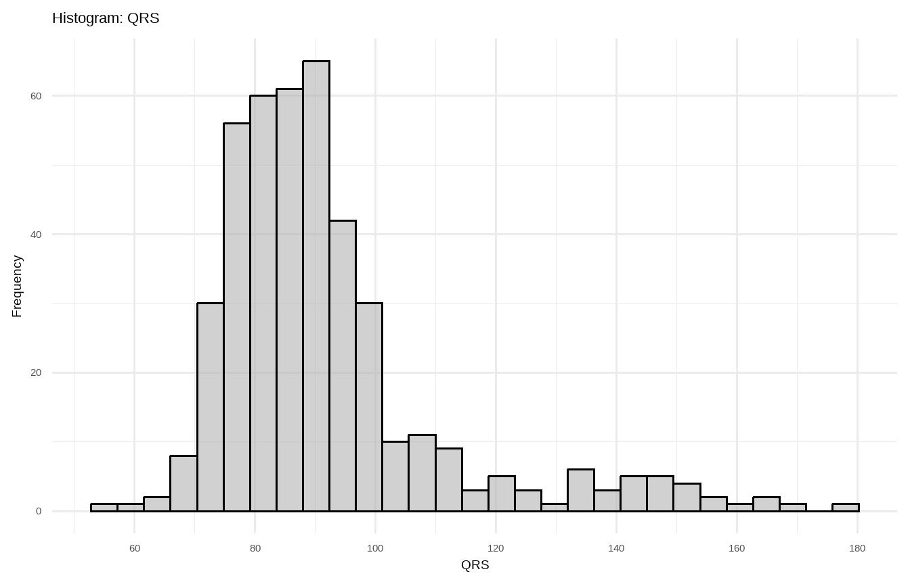
Note that, instead of directly specifying the number of bins in geom_histogram(), we can control the bin width using the binwidth argument (e.g., binwidth = 8). The number of bins (or bin width) greatly affects the histogram’s appearance, so experimenting with different values is essential for creating the most informative visualization.
15.5.2 Density Plot
A density plot is an alternative way to represent the distribution of numerical data, often viewed as a smoother version of a histogram (Figure 15.10). It is typically scaled so that the area under the curve equals one. In ggplot2, the geom_density() function is used to generate a density plot.
# density plot of age
ggplot(arrhythmia, aes(x = age)) +
geom_density(fill="gray70", color="gray60", adjust=1.5, alpha=0.6) +
theme_minimal(base_size = 14) +
labs(title = "Density Plot: age", y = "Density")
# density plot of QRS
ggplot(arrhythmia, aes(x = QRS)) +
geom_density(fill="gray70", color="gray60", adjust=1.5, alpha=0.6) +
theme_minimal(base_size = 14) +
labs(title = "Density Plot: QRS", y = "Density")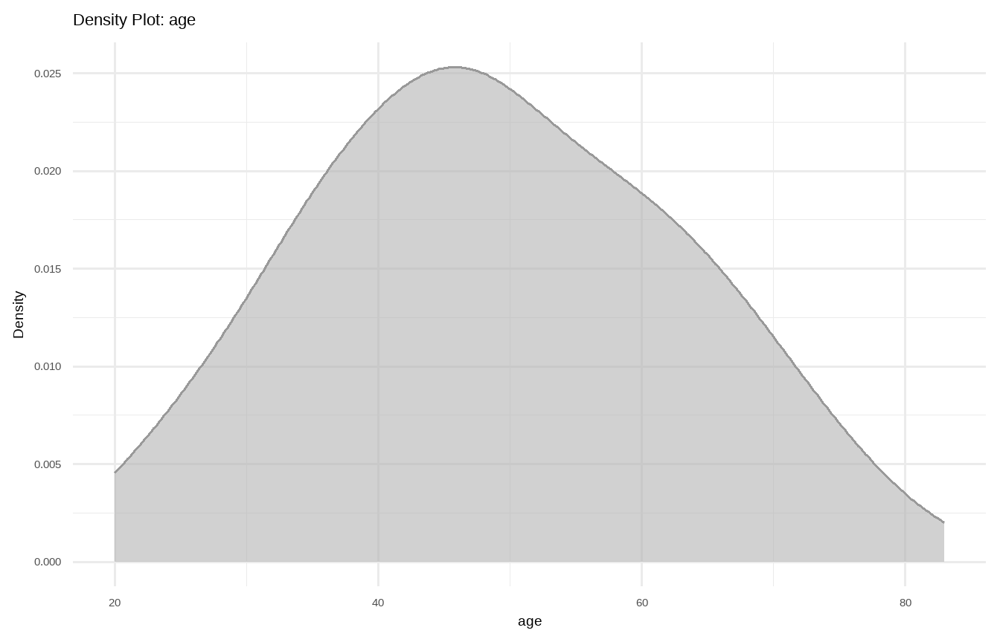
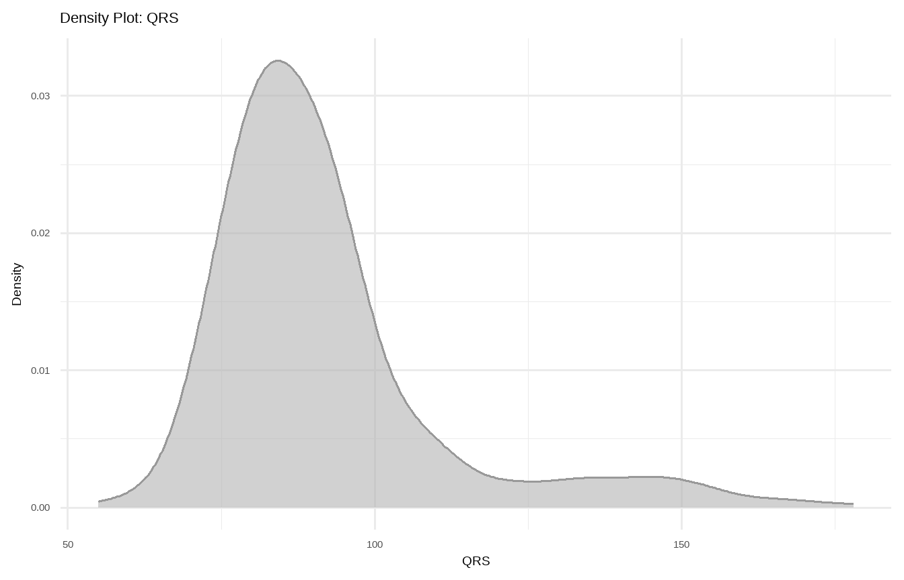
In Figure 15.10 a, the age distribution exhibits a symmetrical bell-shaped form, with the highest frequency occurring around 50 years old. The patients’ ages range approximately from 20 to 80 years. In Figure 15.10 b, the QRS variable follows a right-skewed distribution, with a higher frequency occurring around 80 ms and a range roughly from 50 to 180 ms.
15.5.3 Normal Q-Q plot
The normal Q-Q plot, or normal quantile-quantile plot, provides an easy way to visually check whether or not a variable is normally distributed. The values in the plot are the quantiles of the variable distribution (sample quantiles) plotted against the quantiles of a standard normal distribution (theoretical quantiles). If the points fall close to a straight reference line, then the data are normally distributed (although the ends of the Q-Q plot often deviate from the straight line).
It is straightforward to generate a normal Q-Q plot in R using the ggqqplot() function from the ggpubr package. By default, the reference line in the plot is based on the first and third quartiles, which helps visually assess the normality of the data.
# q-q plot of age
ggqqplot(arrhythmia, "age", conf.int = F) +
theme_minimal(base_size = 14)
# q-q plot of QRS
ggqqplot(arrhythmia, "QRS", conf.int = F) +
theme_minimal(base_size = 14)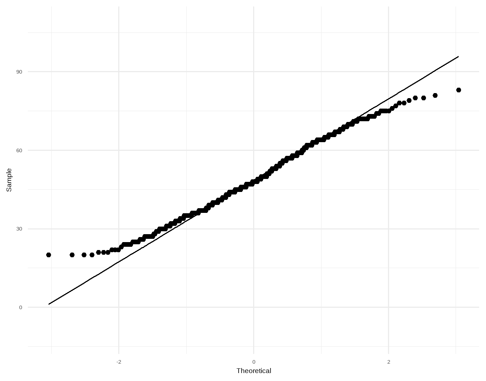
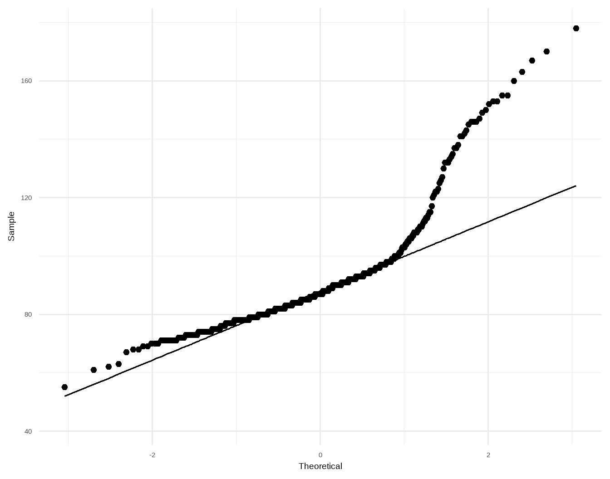
As expected, in Figure 15.11 a, the points on the Q-Q plot align closely with a straight line, indicating that the age variable approximates a normal distribution, although there are slight deviations at the tails. In contrast, in Figure 15.11 b, the points primarily deviate at the high end, suggesting a right-skewed distribution for the QRS variable.
15.5.4 Box Plots
Box plots are useful for visualizing the central tendency and dispersion of numerical data, especially when comparing distributions across multiple groups. They represent data using a box-and-whisker format, as demonstrated in Figure 15.12. The edges of the box represent the interquartile range (IQR), which contains the middle 50% of the data, while a line inside the box indicates the median. The whiskers extend to include most of the remaining data points, and any points beyond the whiskers are displayed as individual dots, marking potential outliers. According to Tukey’s method, any value outside the interval (Q1 - 1.5 × IQR, Q3 + 1.5 × IQR) is considered an outlier.
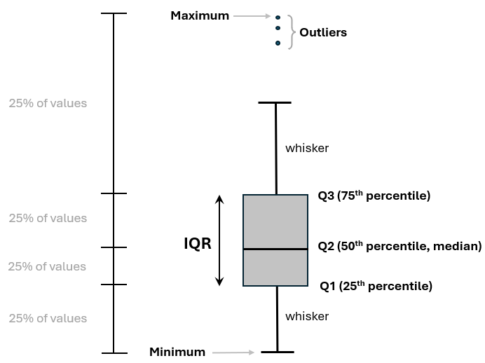
In Figure 15.13, the box plots for age exhibit approximately symmetric distributions around the median for both female and male patients.
# box plot of age stratified by sex
ggplot(arrhythmia, aes(x = sex, y = age, fill = sex)) +
geom_boxplot(alpha = 0.6, width = 0.3) +
theme_minimal(base_size = 14) +
scale_fill_grey() + theme(legend.position = "none")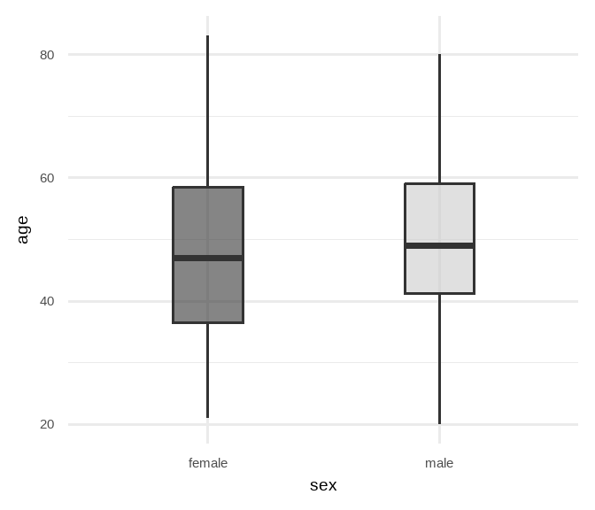
In contrast, in Figure 15.14, the distributions of QRS data exhibit positive skewness. The box plots display that the medians are closer to the lower quartiles (\(Q_1\)), and several outliers are present at the upper end of the data range for both female and male patients.
# box plot of QRS stratified by sex
ggplot(arrhythmia, aes(x = sex, y = QRS, fill = sex)) +
geom_boxplot(alpha = 0.6, width = 0.3) +
theme_minimal(base_size = 14) +
scale_fill_grey() + theme(legend.position = "none")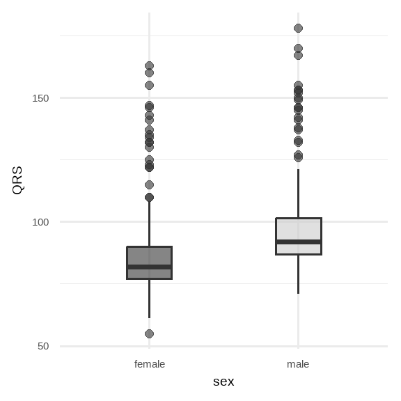
Outliers
Outliers are unusually large or small observations in a data set, often due to measurement errors (e.g. data entry errors, instrument malfunctions) or because they represent “rare” events from a different population.
To assess the influence of outliers, a sensitivity analysis can be conducted, systematically examining how including or excluding these outliers impacts the results and the overall robustness of the conclusions (Thabane et al. 2013).
15.5.5 Raincloud Plot
Although a box plot provides a useful summary of a distribution, it does not capture finer details, such as multimodal patterns. To overcome this limitation, several adaptations have been developed. A notable example is the raincloud plot, which combines multiple visualizations into a single graph, providing a more comprehensive view of the distribution’s shape and spread.
We will use the package ggrain which provides the geom_rain() function for generating raincloud plots. This geometry extends beyond standard ggplot2 geoms by combining multiple plot types into a single visualization: a density distribution of the data (the “cloud”), a traditional box plot, and raw jittered data points (the “rain”, also known as strip plot). Each component can be customized using the arguments violin.args, boxplot.args, and point.args.
# raincloud plot of age stratified by sex
ggplot(arrhythmia, aes(sex, age, fill = sex)) +
geom_rain(violin.args = list(alpha = 0.6),
point.args = list(size = 1, alpha = 0.3),
rain.side = 'l') +
stat_summary(fun = "mean", geom = "point", size = 4, shape = 23,
aes(orientation = 'y')) +
theme_minimal(base_size = 14) +
scale_fill_grey(start = 0.5) +
theme(legend.position = "none")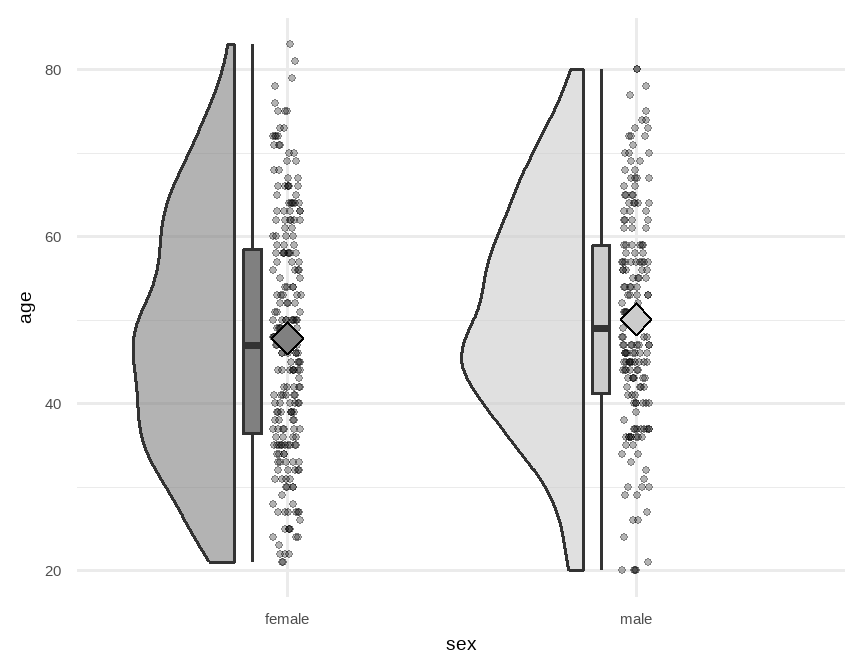
In Figure 15.15, age ranges for both females and males span approximately 20-80 years, with symmetrical density curves and comparable variances. The mean age (rhombus symbol) is slightly higher in males, but overall, the distributions are highly similar.
# raincloud plot of QRS stratified by sex
ggplot(arrhythmia, aes(sex, QRS, fill = sex)) +
geom_rain(violin.args = list(alpha = 0.6),
point.args = list(size = 1, alpha = 0.3),
rain.side = 'l') +
stat_summary(fun = "mean", geom = "point", size = 3, shape = 23,
aes(orientation = 'y')) +
theme_minimal(base_size = 14) +
scale_fill_grey(start = 0.5) +
theme(legend.position = "none")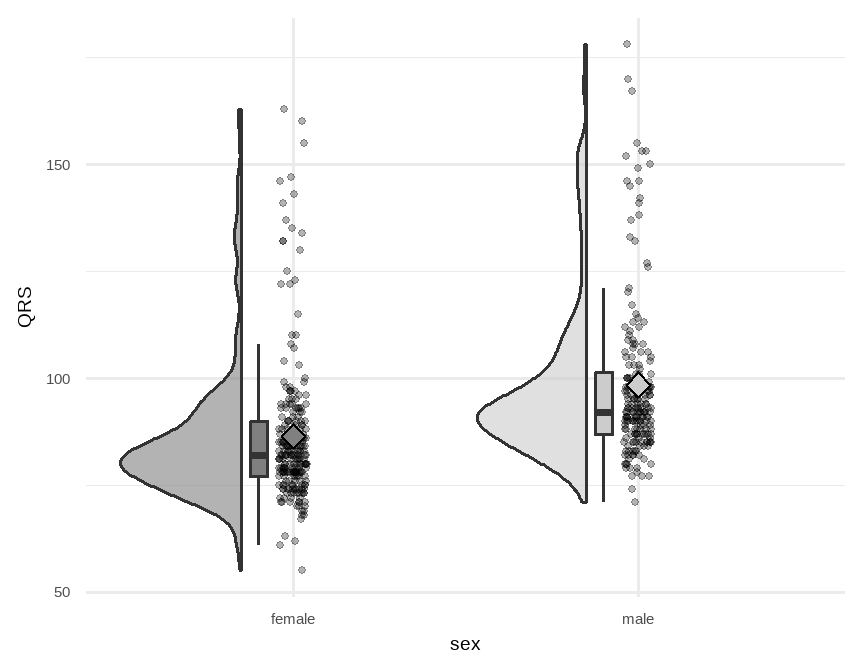
In Figure 15.16, QRS duration distributions for both females and males are skewed, indicating longer tails toward higher values. While the overall shapes are similar, males exhibit a slightly higher median QRS duration and an overall upward shift in the distribution relative to females.